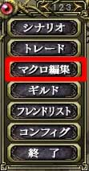
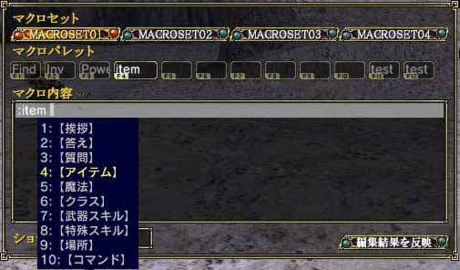

頻繁に使う魔法ほどマクロを組んだ方が便利です。逆に言えば、「SHIELD-I」のように長時間効果が持続するものはマクロとして登録しなくともさほど困りません。
マクロを組むには、メニュー2ページ目の「マクロ編集」を選択します。次に使いたいマクロセットとマクロパレットを選択し、「マクロ内容」へフォーカスを移します。
始めに全部半角英数で「:ma」もしくは、「:magic」と入力します。次に、半角のスペースを入力し、Tabキーを押してください。すると、メニューが出るので「魔法」を選択してください。すると、取得している魔法の一覧が表示されますので、使いたい魔法を選んでからエンターキーを押してください。
最後に半角スペースを入力して、対象を指定します。自分に使うのならば「%m」、戦闘状態の敵に使うのならば「%be」、ターゲットを合わせている対象に使うのならば「%t」です。魔法の種類に応じて適切に選んでください。


(Tabキーを押したとき)
(HEAL-I の使用例) |